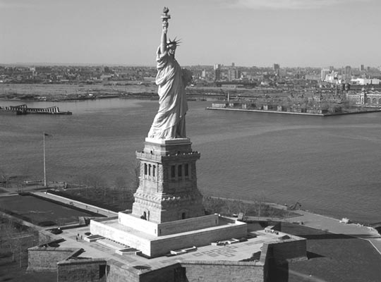
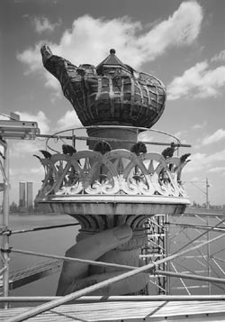
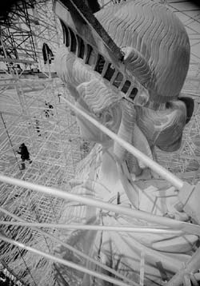

Большой оригинал: история статуи Свободы
В этот день, 28 октября, в 1886 году в Нью-Йорке состоялось официальное открытие статуи Свободы
«Вокруг света» вспоминает историю колоссальной скульптуры в архивном материале.

Статуя Свободы, Нью-Йорк, США
Знаменитая статуя Свободы, неизменно встречающая всех прибывающих в Нью-Йорк морским путем, была преподнесена в дар американскому народу Францией в честь 100-летия обретения Соединенными Штатами Америки независимости. Свободные жители Нового Света недолго оставались в долгу — не прошло и трех лет со дня открытия нью-йоркской статуи, созданной французским скульптором Фредериком Огюстом Бартольди, как американцы сделали ответный шаг — 15 ноября 1889 года, ко дню 100-летнего юбилея Французской революции, они подарили Парижу уменьшенную копию знаменитой леди, выполненную тем же Бартольди. Благодарные парижане установили ее у моста Гренелль, став первыми, естественно, после ньюйоркцев, счастливыми обладателями символа демократии и свободы. И далеко не последними…
Первоначально названная «Свободой, освещающей мир», статуя, по замыслу автора, должна была, величественно возвышаясь над Нью-Йоркским причалом и держа в руке факел, приветствовать людей, прибывающих в Штаты из всех уголков мира. Семилучевая корона на ее голове символизирует 7 океанов, а также 7 континентов, а 25 окон, расположенных в короне, соответствуют 25 природным минералам. Тога — это символ Республик Древней Греции и Рима, а факел в правой руке — эпохи Просвещения. В левой руке у статуи — Книга Законов, а разорванные цепи, лежащие у ее ног, отождествляются с торжеством победы над тиранией. До 1899 года статуя Свободы оставалась самым высоким сооружением Нью-Йорка. В сентябре 1972 года в основании статуи был открыт Музей заселения Америки, в котором можно проследить историю страны от первых ее коренных жителей, индейцев, до прибывавших на континент с начала XX века многочисленных иммигрантов.
Если задаться целью сравнить картину французского живописца Делакруа «Свобода, ведущая народ на баррикады» со статуей «американской леди», стоящей у входа в Нью-Йоркскую бухту, можно обнаружить несомненное сходство в образах обеих «Свобод». И дело здесь не только в похожих побудительных мотивах, но и в том, что история этих двух государств в определенный момент времени переплелась настолько тесно, что это вряд ли могло быть иначе.
Начать с того, что без поддержки Франции североамериканские колонии Британской империи, возможно, и не получили бы долгожданной независимости. Мало того, что Великобритания являлась вечной соперницей Франции, а последняя, будучи привержена республиканским идеям, всячески поддерживала антибританские настроения жителей 13 североамериканских колоний, причем не только на словах, но и на деле: в нужное время в нужном месте оказался крайне влиятельный и деятельный француз, ставший весьма значительной фигурой в освободительной войне, ведущейся в Северной Америке.
Маркиз Мари Жозеф Поль Ив Рош дю Мотьер Лафайет — выдающийся военный и государственный деятель, принадлежавший к высшим слоям французской аристократии, в 1771 году ушел в отставку из французской армии специально для того, чтобы принять участие в революционных событиях в Северной Америке. Там он, получив звание генерала, действовал под непосредственным командованием Джорджа Вашингтона. Военный гений маркиза очень пригодился в ходе освободительной войны, особенно ярко он проявился в битвах при Брендивайне и Йорктауне. Последняя была настолько успешной для американцев, что послужила поводом для начала мирных переговоров между британским королем Георгом и повстанческими силами. Помимо этого, французское правительство оказывало восставшим массированную военную и финансовую поддержку. Итогом 8-летней борьбы стал Версальский мирный договор 1783 года, по которому Великобритания вынуждена была признать полную независимость Соединенных Штатов Америки. А в 1776-м, еще в ходе войны, во время 4-го Континентального конгресса представителей английских колоний была принята знаменитая Декларация независимости, положившая начало образованию нового самостоятельного государства. В основу Декларации был положен проект Томаса Джефферсона, составленный в республиканском и демократическом духе и провозглашавший равенство всех людей перед законом и их неотъемлемые права на «жизнь, свободу и стремление к счастью».

...Спустя почти 100 лет после этих событий небольшая группа французских интеллектуалов, оппозиционно настроенных к режиму Наполеона III, собравшись вместе в один из вечеров, бурно восхищалась американскими свободами. Хозяин того памятного вечера, французский историк, юрист и страстный почитатель американской политической системы Эдуард Рене Лефебр де Лебейль, называвший Францию и США «двумя сестрами», высказал весьма оригинальную идею о том, что было бы неплохо подарить Америке к столетию обретения ею независимости статую, символизирующую Свободу. В числе присутствующих на вечере у Лебейля был и 31-летний французский скульптор Фредерик Огюст Бартольди, которому идея создания статуи показалась весьма интересной. Но, как это часто бывает, даже самые искренние порывы, высказанные в минуты душевного подъема, далеко не всегда или уж, по крайней мере, отнюдь не сразу воплощаются в дела. Так и здесь, даже весьма заинтересовавшийся этой мыслью скульптор напомнил о ней Лебейлю лишь спустя год. А вот уж этому напоминанию не суждено было кануть в Лету. Лебейль, с новой силой загоревшийся мыслью о воплощении предложенного им же проекта, взялся за дело. В первую очередь в связи с колоссальными расходами, к которым должно было привести его воплощение, он предложил подарить Америке статую с тем условием, что американцы сами соорудят для нее пьедестал и установят подаренный монумент. Это предложение было одобрено обеими сторонами, и в 1875 году во Франции начался сбор средств на сооружение статуи. К сожалению, самому Лебейлю так и не удалось увидеть ее в законченном виде, он умер в 1883 году...
Бартольди же в 1871 году посетил Америку и, познакомившись там с президентом Улиссом Грантом и знаменитым поэтом Генри Лонгфелло и произведя на них самое благоприятное впечатление, был буквально очарован этой страной. Вернувшись домой, он с увлечением работал над проектом статуи маркиза Лафайета, которая спустя 5 лет была подарена Францией Нью-Йорку. Наконец, пришло время, когда Бартольди приступил к работе над доверенным ему проектом статуи Свободы. А так как ее гигантские размеры и колоссальный вес диктовали необходимость разработки и создания мощнейших поддерживающих конструкций, выдерживающих тонны меди и сохраняющих устойчивость статуи при немалой силе ветра, к работе был привлечен очень хороший инженер — Александр Гюстав Эйфель. Будущий создатель всемирно известной парижской башни выполнил поставленную перед ним задачу с блеском.
